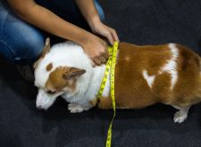
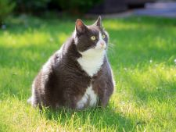
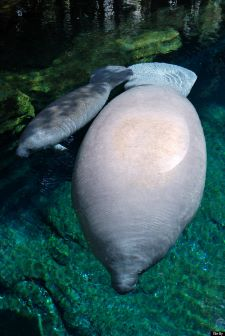
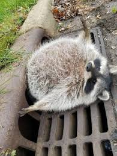

Dogs
Dogs are already adorable, them being fat just makes it cuter.
Cats
Cats are supposed to be nimble and agile animals, so when I see a fat cat, I think it's hilarious and adorable.
Manatees
I am not even sure if they are fat, but look at them.
Bears

Although, they are one most the most effective killing machine in nature, a fat bear just makes me want to cuddle with it.
Racoons
it's stuck.
Honerable Mentions
- Rabbits
- Frogs
- Squirls
- Hippos
- Any fat rodents